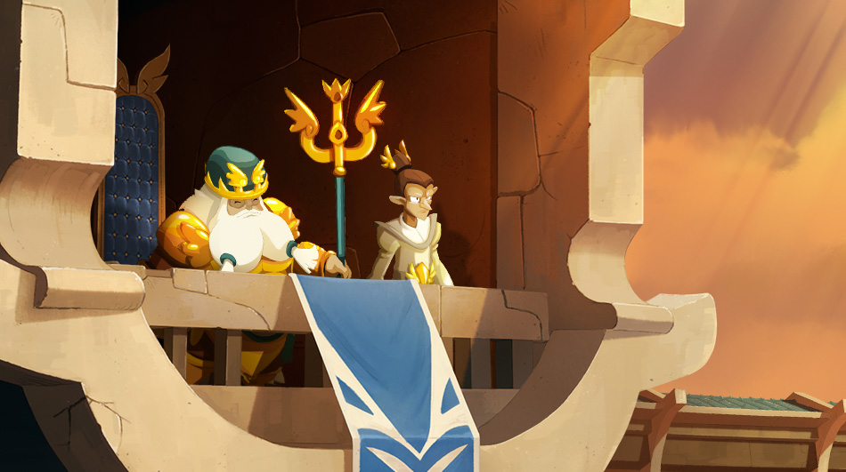
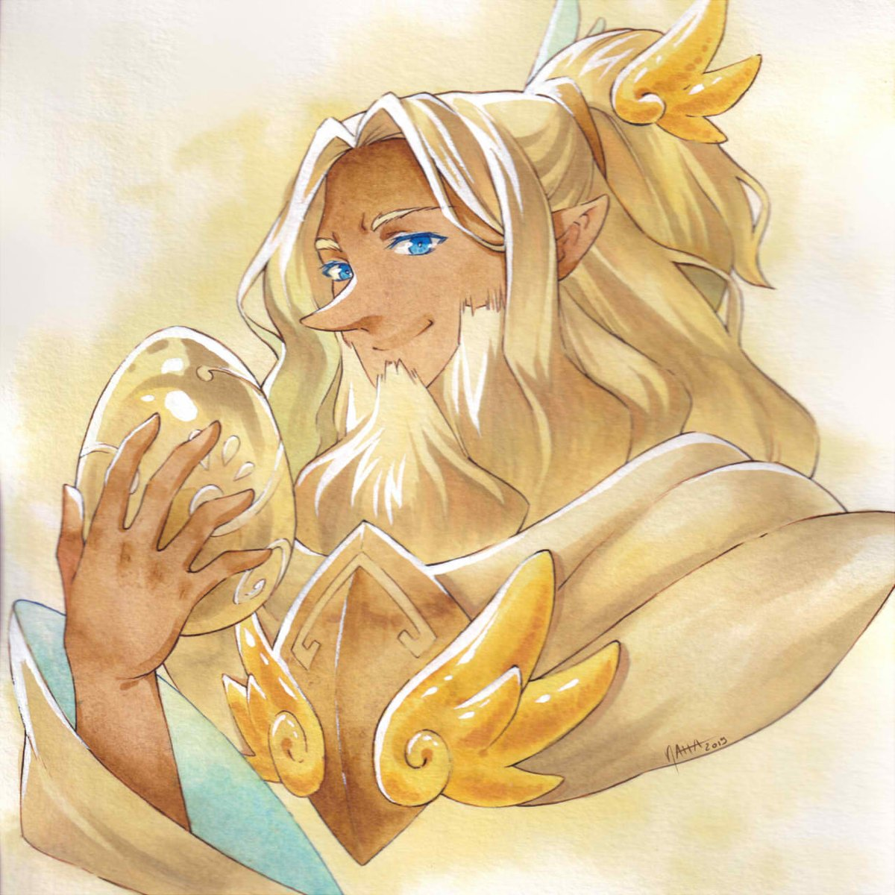

GALDARION - REY DE BONTA
Desde el año 648, un nuevo soberano ha ocupado el trono de la ciudad de la luz.
Galdarion de Bonta es un soberano conocido por su benevolencia y perspicacia, que esta siempre acompañado de un misterioso mago llamado Gabi Lan, el Terraymar.
JAHASH JURGEN
Jahash Jurgen, El Puro, fue el hipermago mas fuerte que ha conocido la ciudad de Bonta. Fue el guardian de el Dofus Marfil, una de las reliquias mas poderosas en existencia.
Sacrifico su vida en el año 645 para detener a Julith, quien utilizaba el Dofus Ebano con la intencion de destruir la ciudad.